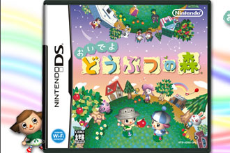
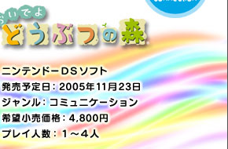
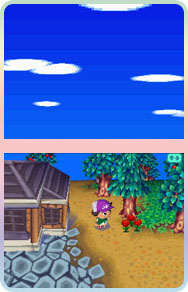
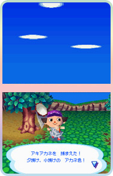
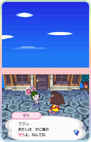
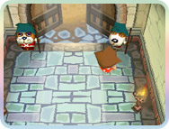
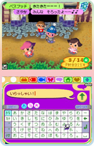
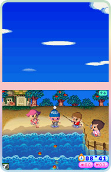

|
|  |

|


携帯ゲーム機でのリリースということで、そのお手軽さに期待しつつ電源オン。
ＤＳの２画面をどう使っているのかな、と開いてみると、上画面には空が。新しいなあ…と素直に感心しました。空が見えると、朝〜夜という時間の変化もわかりやすくて、閉塞感もなく、とってもいい感じです。
また、フィールドが地平線を使った仕様になっており、村のなかをズンズン歩き回っている感覚もリアル。タッチペンを使った操作もスムーズですが、もちろんボタン操作も可能です。
さて、お次はゲーム内容です。
どうぶつ達が暮らす村に引っ越してきた女の子。要するに私。
村でお店を経営するたぬきちに指示されるまま、住人達に挨拶回りをしたり、引っ越し費用のローンを返す為に働いたり、木を揺すってはお金を見つけたり、雑草を引っこ抜いたり、うっかりハチに刺されたりと、平凡ながらも楽しく忙しい生活がスタートしました。
ということで、日々の暮らしをのんびり気ままに楽しむ、という部分は全く変わらずでひと安心。
キャラクターの衣裳を作ったり着せ替えしたりと、シリーズのいいところはそのままに、新要素もたくさんありますよ。
|
|


|

お待ちかねのニンテンドーWi-Fiコネクションを使ったプレイです。
解りやすく言うとい、既存のネットゲームのように、離れた場所にいる人と同じ空間・時間を共有してプレイが出来るということです。
回線をつないだら、まず"せきしょ"へレッツゴー。さっそく友達の村へお呼ばれします。呼んだ方から見ると、せきしょの扉が開いてじゃじゃーんと招待相手が姿を現すわけです。
ここで呼んだ方の人が、ほぼ必ず「来た来たー！」と歓声を上げます。これはやってみないとわからないかも！
で、友達を呼んでどうするの？ という話です。
そもそもこのゲームにはクリアーの義務がなく、さまざまな制約もないので、好きなことをしていてＯＫ。逆になにもしなくてもＯＫ。
ということで、そこらじゅうにあるツールを使って、友達と一緒に好き勝手な遊びをしてくれれば良いわけです。
タイマーもあるので、時間制でつり大会をしたり、取った虫を自慢したりされたり、私は落とし穴を掘られて追いかけられたりもしました……。
さらにチャット機能もついているので、ちょっとした会話にも使えます。くだらなくもしょーもない会話ですら、なぜか楽しいのが不思議。
機能は多彩ですが、どう遊ぶか、どう使うかは自分次第。このゲーム全体に言えることですが、使い方はプレイヤーの自由なのです。プレイヤーそれぞれが色々な遊び方を発見して、仲良し同士でのんびり遊んで欲しいなーと思いました。
|
|


|
|